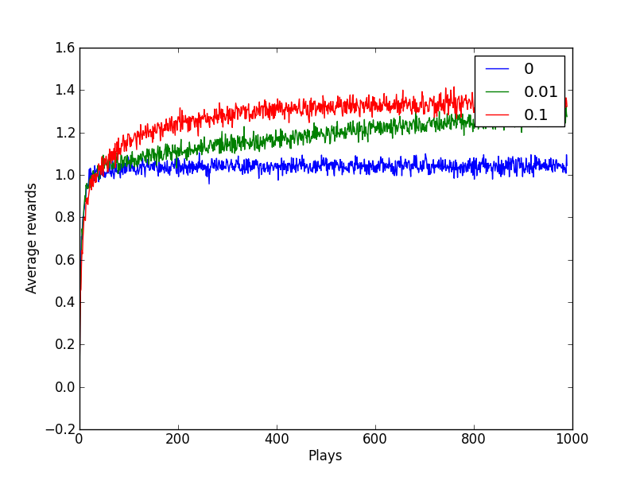
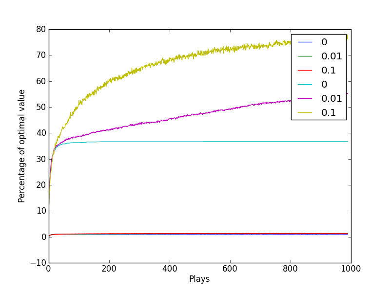

1 Problem
Consider the following learning problem. You are faced repeatedly with a choice
among n different options, or actions. After each choice you receive a numerical
reward chosen from a stationary probability distribution that depends on the
action you selected. Your objective is to maximize the expected total reward over
some time period, for example, over 1000 action selections. Each action
selection is called a play.
This is the original form of the n-armed bandit problem, so named by
analogy to a slot machine, or öne-armed bandit", except that it has n levers
instead of one.
Reinforcement Learning, by Richard S. Sutton and
Andrew G. Barto
This problem will be solved with the following values:
- The bandit has 10 levers (10 actions).
- We will play 1000 times on a Bandit.
- We will repeat the same game 2000 times and average the results.
Now, let's consider the following statements:
- Choose among n different actions repeatedly.
- Each lever gives a reward calculated from a
normal distribution N(0,1).
- Each action has an optimal value, not known by the program.
- Each action has an estimated value, which is the average of received
item rewards at a given time.
- A greedy action is the action whose estimated value is the greatest.
At the beginning of the game, we don't know anything. What are the rewards given
for each lever ? We will then give to all actions the estimated value 0
at the beginning.
If an action always gave the same reward, then the solution would be extremely
simple: after discovering each action's value, choose the highest one and only
play it.
But here, things are more subtile.
Let's call Q*(a) the true value of the action a,
and Qt(a) the estimated value of the action a
at the tth play.
At each time t, the average reward for an action a will be:
|
Qt(a) = |
r1 + r2 + ... + rka
ka
|
|
| (1) |
2 Result
After 3 hours of computation (could have been faster, but I was doing some other
stuff in the same time, so it didn't get 100% of the cpu allocated.

Figure 1: Average rewards for 2000 Bandits
This graph shows that a greedy play will get an average reward of 1.0, when
e-greedy plays are able to get a much better result. In a long term, the
0.01 e-greedy method will be more rentable than the 0.1 one, because once
the optimal action found, he will loose a lot less actions by exploring worse
actions.

Figure 2: Percentage of optimal actions found for 2000 Bandits
The second graph show us that a greedy method will only find the best action
35% of the time. Quite bad for the 65% games remaining. We can also see that
the 0.1 e-greedy method find the best action much more faster than the
0.01 e-greedy one, which mean we have some space left for improvement:
For example, we could start the game with a bigger rule, and reduce it after
some time, to get the best of each e-greedy method.